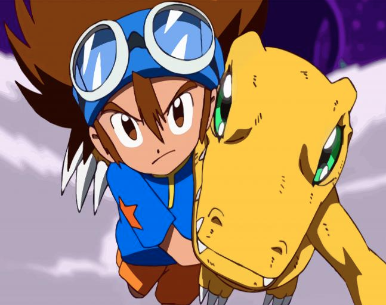
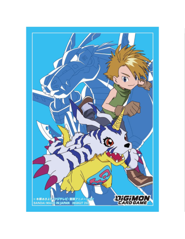
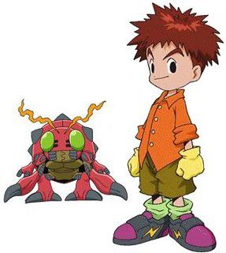
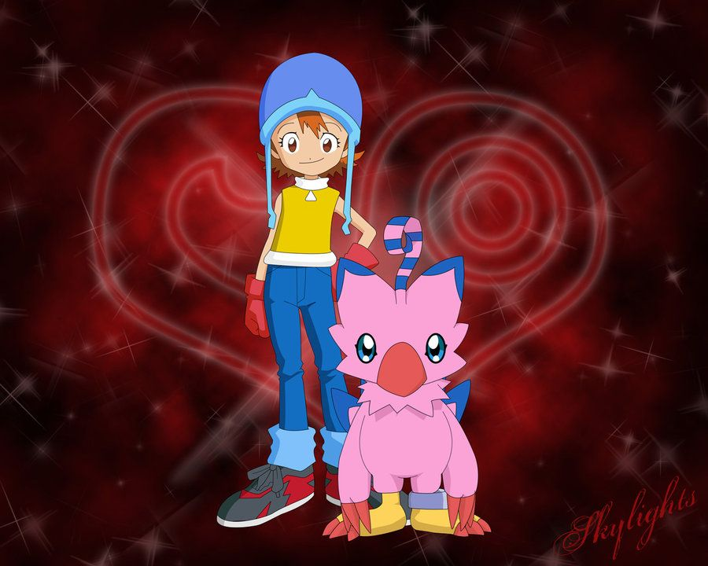
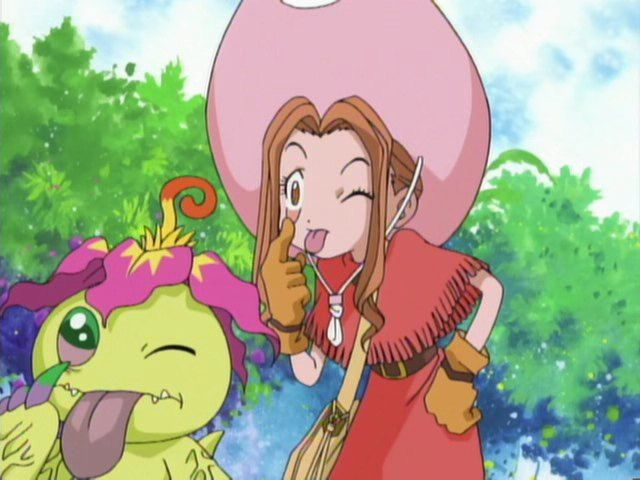
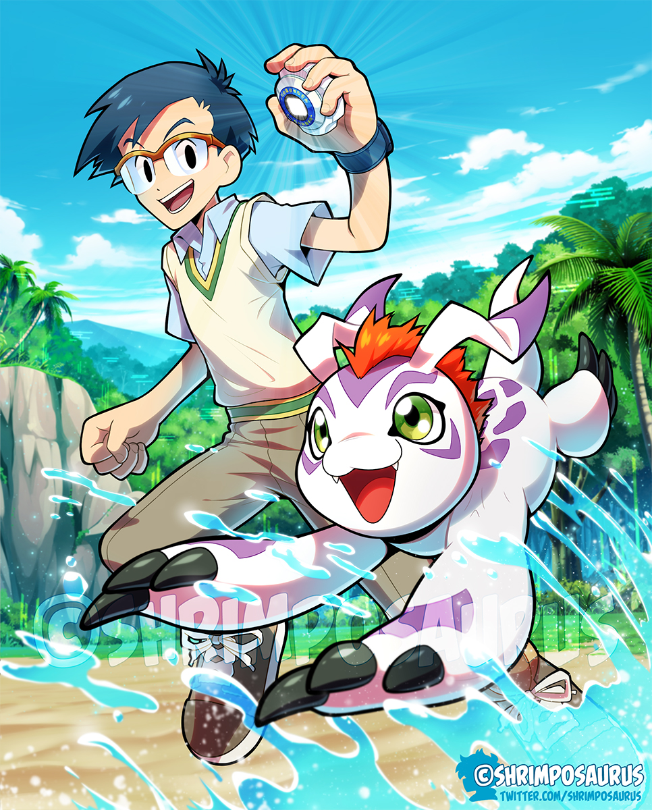
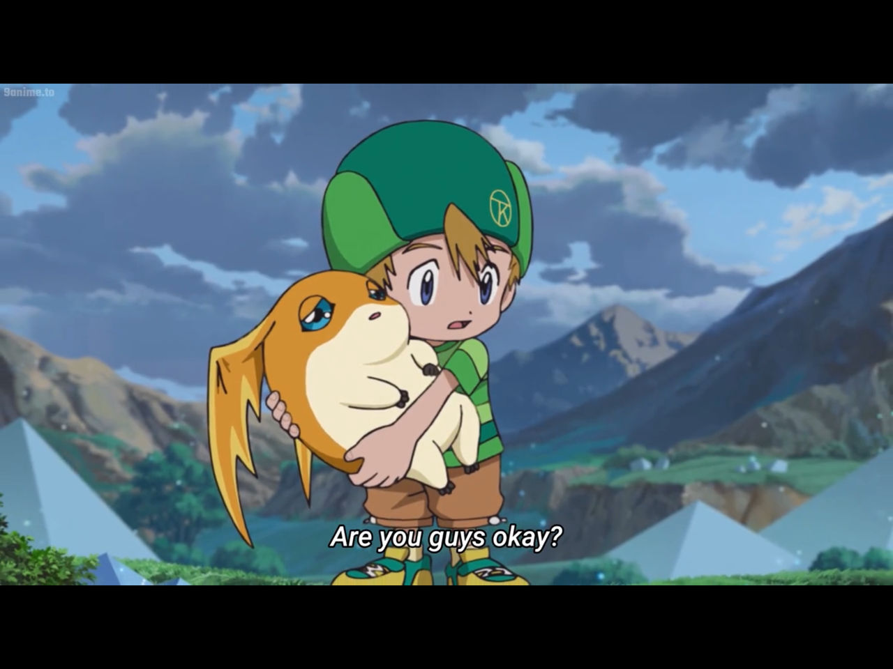
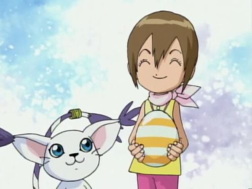
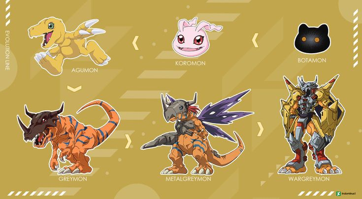
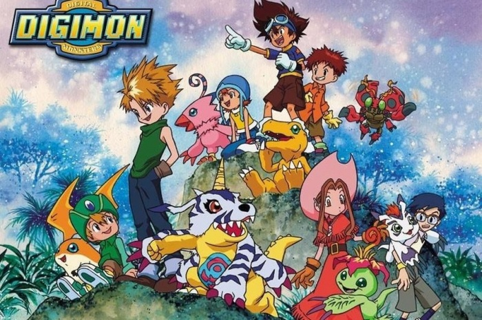

Descubre el mundo de Digimon, los Digimons y sus increíbles evoluciones.
Digimon (Digital Monsters) es una franquicia que comenzó en 1997 con una mascota virtual, similar a Tamagotchi, y creció con series, películas, videojuegos y más. El universo Digimon se centra en el Mundo Digital, habitado por criaturas llamadas Digimon, que son formas de vida artificial creadas a partir de datos. Los "Tamers", o niños elegidos, crían y entrenan a los Digimon para proteger este mundo de diversas amenazas.
Tai es el líder de los DigiDestined y tiene a Agumon como su compañero. Juntos enfrentan desafíos y protegen el Mundo Digital.
Matt es el líder natural del grupo, y Gabumon es su leal compañero. Juntos tienen una relación de confianza y amistad.
Izzy es un genio de la tecnología y tiene a Tentomon como su compañero. Juntos resuelven problemas usando su inteligencia y creatividad.
Sora es una persona cariñosa y preocupada por los demás, y tiene a Biyomon como su compañero. Juntos representan la amistad y la valentía.
Mimi es alegre y optimista, y tiene a Palmon como su compañera. Juntas, tienen un fuerte vínculo de amor y amistad.
Joe es una persona seria y responsable, y tiene a Gomamon como su compañero. Juntos se enfrentan a los desafíos con valentía y cuidado.
T.K. es el más joven del grupo, pero tiene una gran determinación. Su compañero, Patamon, es un digimon valiente y siempre dispuesto a ayudar.
Kari es la hermana menor de Tai y tiene a Gatomon como su compañera. Juntas, muestran gran bondad y coraje.
Los Digimon son criaturas digitales que digievolucionan, un proceso por el cual mejoran sus poderes y habilidades a medida que avanzan a nuevas formas. Se dividen en tres tipos: datos, vacuna y virus, cada uno con diferentes roles y características. A lo largo de su vida, los Digimon pasan por seis etapas de digievolución: Digi-Huevo, Bebé, Bebé II, Niño, Campeón, Ultra y Mega, cada una más poderosa que la anterior.
En el Mundo Digital, los Digimon absorben información y evolucionan, ya sea a través del tiempo o en función de sus experiencias. Aunque algunas especies alcanzan la Etapa Mega, hay Digimon que no llegan a este nivel debido a la gran cantidad de poder que implica, y mueren antes, a menos que tengan un Tamer (Entrenador) que los cuide. Además, existen más de 2000 especies de Digimon, y su apariencia y habilidades pueden variar dependiendo de la región en la que hayan crecido.
Digimon (Digital Monsters) es una franquicia que comenzó en 1997 con una mascota virtual que rápidamente evolucionó en una amplia gama de productos como videojuegos, animes, mangas, juguetes y cartas coleccionables. Su popularidad aumentó con el lanzamiento de la serie de anime "Digimon Adventure" en 1999, la cual, junto con el videojuego "Digimon World", consolidó la franquicia en la cultura popular.
El argumento de Digimon se desarrolla en el Mundo Digital, un universo paralelo habitado por criaturas digitales que nacen y evolucionan a partir de datos. Estos Digimon son cuidados y entrenados por humanos conocidos como "Tamers", quienes los guían para proteger el Mundo Digital de amenazas que ponen en peligro su equilibrio. Con más de 2000 especies de Digimon, la franquicia ha dejado una huella significativa, alcanzando el puesto número 54 entre los mejores animes de la historia según una encuesta de TV Asahi en 2006.
